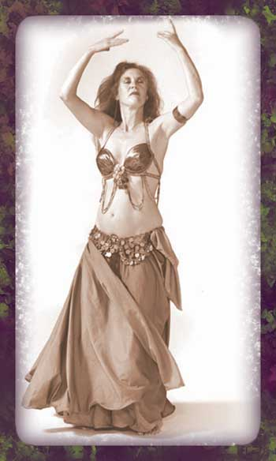

|  Jamie "Sabah" Miller (1942-1999) |
~BELLY DANCE FROM THE
INSIDE OUT~
Belly dancing is one of the oldest dances alive today. It carries an ancient wisdom that acknowledges that the human experience is grounded in the body. Its roots are deep, coming from a time in human culture before the development of written language when agricultural societies worshipped the great goddess as the giver of life. It was created and performed by women for women to help themselves give birth. The dance expresses the trembling and quivering of life itself.
Belly dancing is a dance of the flesh. Unlike many Western forms of dance, belly dancing accepts, even celebrates the experience of weight and our connection to the planet. The movements of the dance express the power of the pelvis, the spine, and the central nervous system. This power, called “kundalini,” is often depicted as a serpent lying coiled at the base of the spine. The movement of belly dancing raises this power and uses it to energize the entire body, from toe tips to fingertips, from soles of the feet to top of the head. |